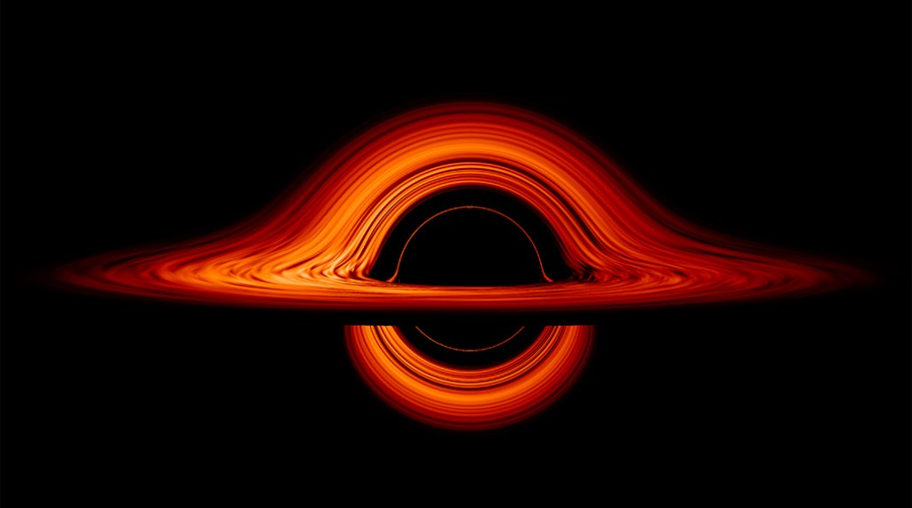

VOID
see beyond the event horizon

Multi-spectrum data capture across the full electromagnetic range — from radio waves to gamma rays.
Physically accurate relativistic ray-tracing through the curved geometry of spacetime.
Uncover patterns hidden in gravitational data that reshape our understanding of the cosmos.
VOID is used by research teams across 40+ institutions worldwide. Our platform processes petabytes of observational data into real-time visualizations that make the invisible visible.
Learn more about our mission →"The black hole teaches us that space can be crumpled like a piece of paper into an infinitely tiny point, that time can be extinguished like a blown-out flame."— John Wheeler